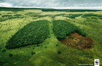
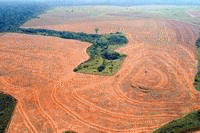
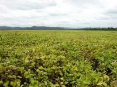

|  | Cela fait plus de 20 ans que l'on alerte l’opinion mondiale et les décideurs sur le bouleversement que connaît l’Amérique du Sud. Principalement médiatisée par la déforestation du bassin amazonien, cette catastrophe écologique et humaine se retrouve dans l’ensemble du « Cône Sud », conséquence d’une généralisation de l’agriculture intensive et notamment de la production du soja. Depuis, une partie substantielle du continent s’est transformée en monoculture, au prix d’une brutalité inouïe, mélange de spoliation des populations, recours à une main d’œuvre quasi réduite à l’esclavage, destruction à grande échelle des milieux naturels, pollution des cours d’eau, émissions considérables de gaz à effet de serre, etc. |
Plus récemment ont été introduites les semences OGM, au point désormais de concerner 60% du soja brésilien et presque 100% en Argentine et au Paraguay, au point même que des acteurs européens de la grande distribution rencontrent des difficultés croissantes à se fournir en soja non OGM. Au point que cette filière d’approvisionnement non OGM est à présent menacée, tandis que sa disparition bannirait toute distinction entre soja OGM et soja non OGM…
Ce soja, il va sans dire, est exporté en masse à destination du bétail et des volailles en Amérique du Nord, Europe, Chine, etc. Telle est la situation, qu’on le veuille ou non.
|
 |
A force de les interpeller des années durant, une « table-ronde du soja responsable » (RTRS) a fini par être mise en place. Elle regroupe les acteurs majeurs de la filière qui au départ n’en voulaient pas. Qui maintenant ont compris qu’ils n’avaient guère le choix, en fait. Parmi eux : Monsanto. Le diable en personne. Egalement, siègent dans le conseil d’administration de la RTRS plusieurs organisations dont le WWF, logiquement représenté par le WWF-Brésil et Le WWF.
Qu’est-ce qu’on y fabrique, autour de cette RTRS ? On discute de critères de production. De la protection des populations. Du droit des syndicalistes. De la protection des forêts à haute valeur de conservation et des rivières. Des engrais et des pesticides. De la nécessité de séparer les filières OGM des non OGM à défaut de renoncer aux OGM ou bien, pour les opposants aux OGM, de disposer des capacités de faucher volontairement des millions d’hectares assolés, chaque année, du soja.
|  | Ça discute sec, autour de la RTRS. On frappe du poing sur la table. On résiste au cynisme, au refus d’aborder certains sujets, au mépris des mâles dominants qui forment le corporate de la plupart des firmes d’agro-business. C’est pas gagné, et on ne sait évidemment pas ce qu’il en sortira. Mais nous ne sommes pas naïfs. Si l’on n’en connaît pas l’efficacité, on sait seulement que si l’on n’y siège pas, ou si cette RTRS n’existait pas, on perd la possibilité de la discussion avec les principaux responsables. Voilà l’histoire. Alors non, nous ne soutenons pas Monsanto. Ça, c’est du gros mensonge. Non, nous ne soutenons pas les pires pratiques de l’agrobusiness, puisque précisément il les combat. Avec beaucoup d’autres. Sur plusieurs fronts, dont pas un est inutile, même le front du dialogue. |
Bien sûr les puristes hurlent et protestent. Pas de dialogue avec le Diable ! Ils disaient la même chose lorsque, avec d’autres, Le WWF s’est mis à discuter avec les exploitants forestiers d’Afrique Centrale, par exemple. Pour une certification FSC des exploitations forestières qui, aujourd’hui, montrent qu’on peut diminuer fortement les impacts à défaut de les supprimer, le temps que les consommateurs de bois tropicaux que nous sommes, nous les pays riches, apprenions à choisir avec davantage de discernement les biens et matériaux que nous utilisons.
Voilà, tout est dit. Que ceux qui refusent l’idée même du dialogue s’interrogent sur la portée de leurs actions réelles, et qu’ils concentrent leur feu sur les premiers responsables du désastre. Et un dernier détail, des fois qu’on n’aurait pas compris : Le WWF est opposé aux OGM, à la destruction des milieux naturels, aux violences faites aux populations, à la pollution de l’eau, au dérèglement climatique, à l’embastillement des syndicalistes, etc...